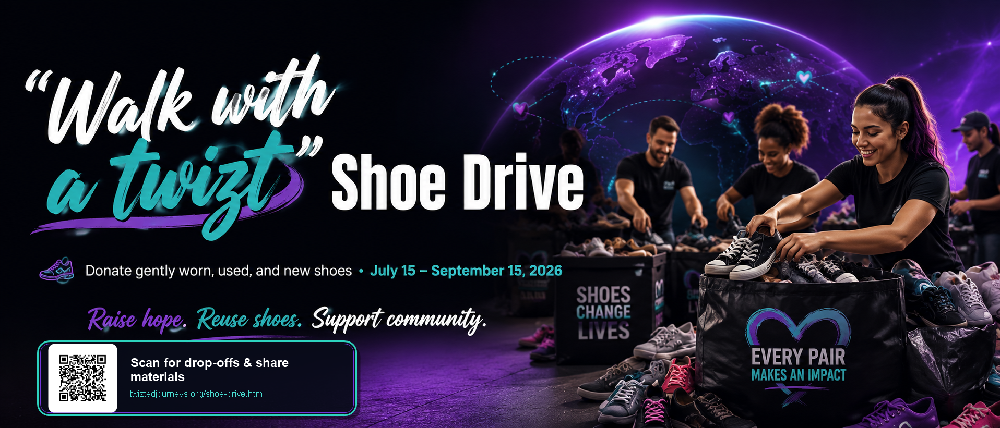

Campaign Window
July 15 to September 15, 2026
Community walk date: September 13, 2026

Scan for shoe drive details, drop-off locations, and share materials.
Download Shoe Drive QRCampaign Snapshot
Here’s when to donate, what to bring, and where shoes can be dropped off.
July 15 to September 15, 2026
Community walk date: September 13, 2026
Gently worn, used, and new shoes
Clean, dry, wearable pairs in all sizes and styles.
Outreach and recovery support
Supports Twizted Journeys suicide awareness/community outreach and Jana Crisman’s medical bills.
Why This Matters
This shoe drive turns extra shoes into real support. Donated shoes help raise funds for Twizted Journeys awareness, community outreach, and support efforts while also helping Jana Crisman during her recovery. Shoes are also reused through the Funds2Orgs network, giving them a second life instead of sitting in closets or landfills.
Campaign Snapshot
Choose How You Can Help
Pick one quick action. Every pair, post, bin, and invitation helps move the campaign forward.
Gather gently worn, used, and new shoes and bring them to a campaign drop-off spot.
Find Drop-OffsGive neighbors, customers, or coworkers an easy place to donate shoes together.
Contact UsPrint or post the QR so people can find drop-offs, dates, and share materials fast.
Download QRLook for the Twizted Journeys shoe donation bin during Cornstock Festival 2026.
See DetailsAsk a church, school, workplace, or business to collect shoes and share the campaign.
Copy Share TextHave a larger donation or pickup question? Send the team a quick note.
Email Pickup QuestionBring clean, dry, wearable pairs. Not all shoes qualify — here’s what we can and cannot accept.


When in doubt — if you'd wear it, donate it. If you'd trash it, skip it.
Local media, schools, churches, businesses, workplaces, and community groups are invited to share the “Walk with a twizt” Shoe Drive and help turn donated shoes into care for local families.
Please use the press release for newsletter blurbs, bulletin announcements, partner emails, event calendars, and local coverage. The campaign supports Twizted Journeys suicide awareness and community outreach while helping Jana Crisman with medical bills.
Tonya Crump, CEO
Use this QR on flyers, Cornstock Festival 2026 materials/signage, Waldron General Store counter/signage, bulletin boards, partner counters, and social graphics.
Download Shoe Drive QR
Use this QR-ready campaign graphic for social sharing, flyers, print signs, Cornstock table signage, and shoe-bin reminders.
Download Share GraphicContact Tonya Crump, CEO, for press questions, community sharing, drop-off coordination, or campaign partnership details.
Tonya Crump, CEO · Office (317) 604-3642
Email info@twiztedjourneys.org
If you are in crisis: Call or text 988 — free, 24/7.
Crisis Text Line: text HOME to 741741
{kind=link}